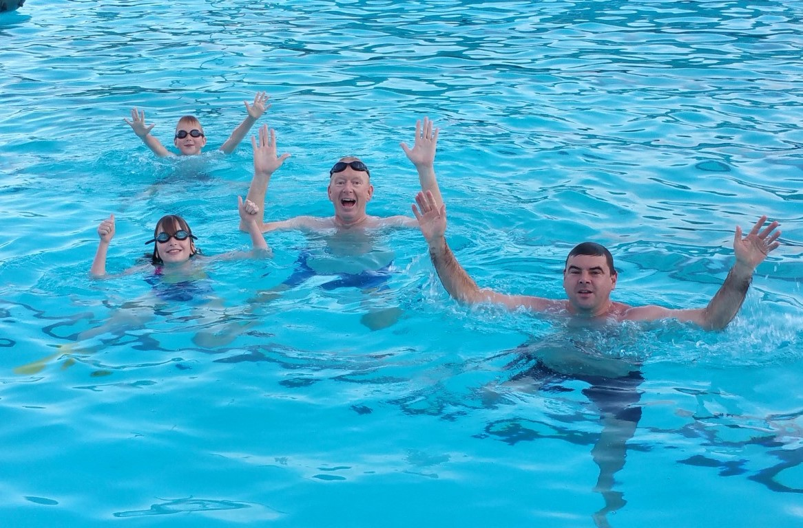

My cunning plan of asking you to marry me lacked somewhat in traditional romance, but allowed us to celebrate with both our families over the holiday and start planning our wedding! KZN was a short stop where I failed to take any pictures so...
...we pick up the action again at Woodridge, with the Cranes, and Mom and Pops.
We took full advantage of the facilities, especially the swimming pool where Aimee and Joel spent hours in their new boat!
Sedgies sunsets - always worth the drive to the mouth!
I met a bunch of your parent's friends (the ones who prayed for you to meet a nice man) when we went for sundowners at the paragliding spot!